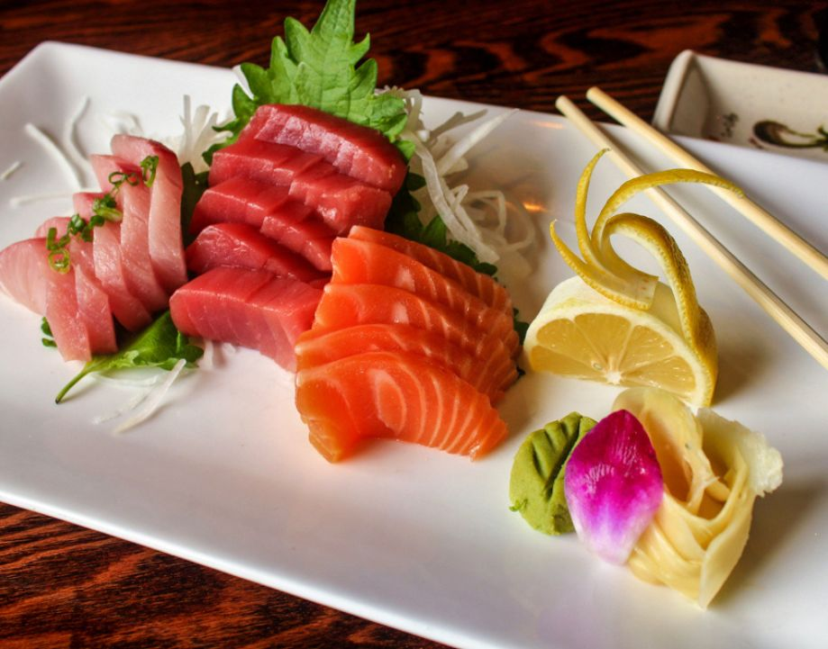
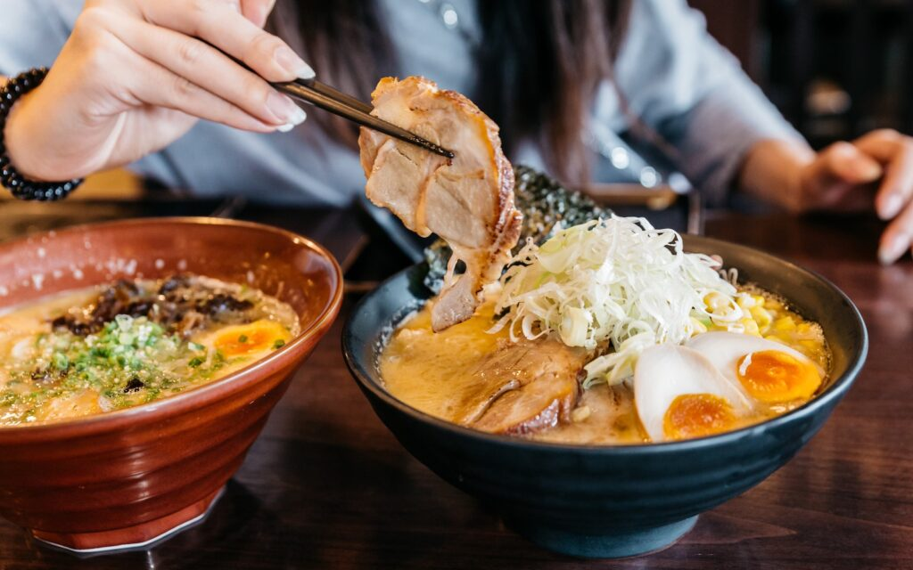
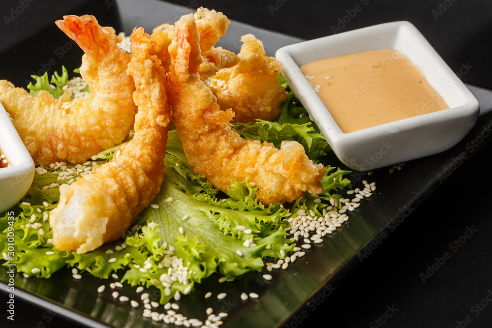

Japanese Cuisine: A Culinary Journey
Japanese cuisine, known as washoku, is renowned for its emphasis on fresh, seasonal ingredients and meticulous preparation. From sushi and sashimi to ramen and tempura, Japanese food offers a wide range of flavors and textures to tantalize your taste buds.
Popular Japanese Dishes
Here are some must-try Japanese dishes:
-
Sushi: Vinegared rice topped with raw fish or other ingredients

- Sashimi: Slices of fresh raw fish served without rice 
- Ramen: Noodles served in a flavorful broth, often with toppings like pork, egg, and green onions 
- Tempura: Deep-fried seafood and vegetables in a light, crispy batter 
-
Tonkatsu: Breaded and deep-fried pork cutlet served with a tangy sauce

These are just a few examples of the many delicious dishes you'll find in Japanese cuisine. Whether you're a sushi aficionado or a ramen enthusiast, there's something for everyone to enjoy!